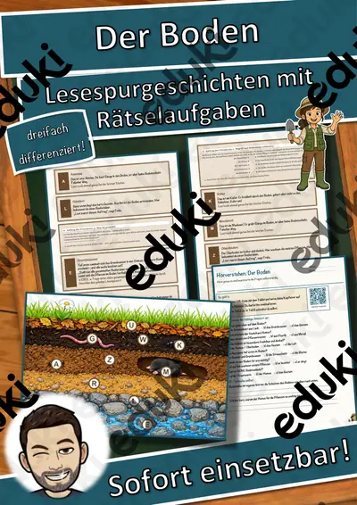

Wasserkreislauf - Homeschooling
Mit diesem Material erhalten Sie ein Arbeitsblatt, auch geignet zur Heimarbeit, Homeschooling während der Schulschließung aufgrund des Coronavirus zum Thema: "Der Wasserkreislauf" inkl. Lösung. Unser Wasser befindet sich in einem permanenten Kreislauf. Das Wasser der Meere und Flüsse verdampft ständig. Wasseroberfläche verdampft, Wolken werden aus Wasserdampf gebildet, Niederschlag fällt an die Oberfläche, ein Teil davon ernährt das Oberflächenwasser, ein anderer Teil dringt in den Boden ein. Dieses Arbeitsblatt erklärt mit Hilfe eines Videos den Wasserkreislauf anschaulich.
FachErdkunde
KlasseKl. 3–4
SchulformGrundschule
MaterialartStundenentwürfe, Arbeitsblätter, Stationenlernen, Fördermaterial/Inklusion
Ähnliche Materialien

Der Wasserkreislauf – Lesespurgeschichte mit Rätselaufgaben (Klasse 6)

Wasserkreislauf Lückentext mit Wortspeicher Hörverstehen und Suchsel

Niederschlag Lückentext mit Wortspeicher Hörverstehen und Suchsel

Flache Werkstücke - Abschrägung (auch Homeschooling) inkl. Video

Wenn die Erde bebt – Lesespurgeschichte mit Rätselaufgaben (Klasse 6)

Die Atmosphäre – Lesespurgeschichte mit Rätselaufgaben (Klasse 8)

Der Klimawandel – Lesespurgeschichte mit Rätselaufgaben (Klasse 8)
